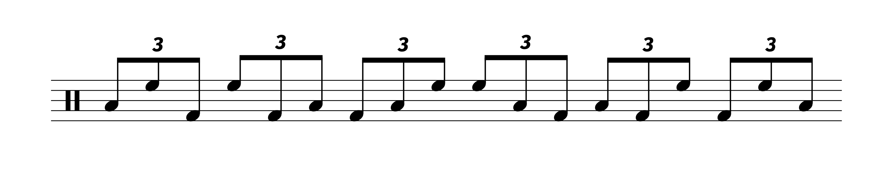
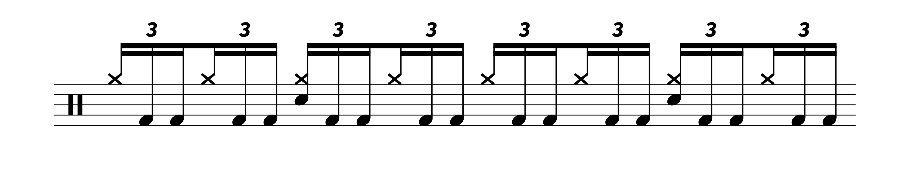
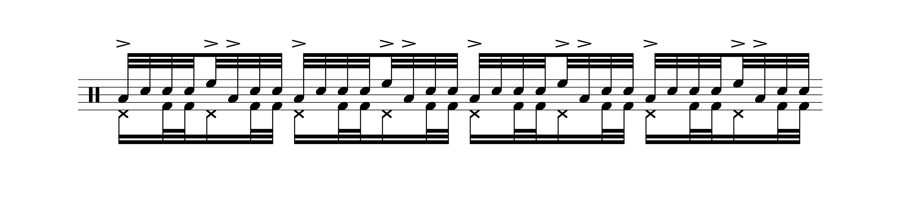

What’s the Deal With “Bonham Triplets”?
Posted on April 17, 2022

I’m a little bit late to the party on this one, but drummers are still as confused as ever regarding this topic, so here goes.
After getting into Led Zeppelin back in high school and learning about John Bonham, I became familiar with one of Bonham’s signature licks — “The Bonham Triplet”. It’s a straightforward idea involving linear triplets played between the hands and the kick drum:
There are several different interpretations possible of this idea. Most drummers would play RLK, while Bonham typically played them LRK. Steve Gadd is someone notable who comes to mind their own version (KLR).
Circa 2013, there were a ton of videos on YouTube explaining this, with many people sharing their takes on how to learn this lick and how to use it. Sounds great, right?
Well, everything changed when Drumeo attacked:
Apparently, the “Bonham Triplet” actually refers to bass drum doubles, played as triplets:
So, now whenever someone brings up “Bonham triplets”, drummers have to ask “Umm, which Bonham triplet are you talking about?”.
The above video was published back in 2020 and stars drummer Brian Tichy. Tichy, a purported Bonham expert, made an earlier video from 2019 titled “5 Must–Know John Bonham Licks”. I must say, I really appreciated the language of that title, as it works much better than a lot of other videos that are basically saying “How To Sound Like A Ripoff of Your Favorite Drummer!!11!!11”. But in the “Must Know Licks” video, he uses Bonham triplet to refer to triplet bass drum doubles, while the hand–to–foot lick is called the “Crossover Triplet”.
Now to be fair to Tichy, many drummers have since said that, to them, “Bonham Triplet” has always meant the bass drum thing. For a definition to work, people just have to arbitrarily agree on what something means, so obviously, we’re a far cry away from having any correct answer for what a Bonham triplet is. But I have a few problems with using Bonham Triplet to refer to bass drum doubles.
My biggest issue is that using Bonham triplets in this regard shortchanges Bonham’s bass drum ability, more or less reducing it down to measure 12 of “Good Times Bad Times”. But the truth is that Bonham showed off his kick drum chops in a variety of situations with a variety of subdivisions.
I know the triplets are the most famous, but you can’t ignore moments like “Immigrant Song” and “Achilles Last Stand”, which are driven by demanding 16th note groves. Or perhaps “Wearing and Tearing”, using fast 8th notes. And then you have 16th note quad fills as heard on “How Many More Times”. In terms of 32nd notes, there aren’t that examples in the studio — the only one that comes to mind is a gnarly quad fill towards the end of “The Lemon Song”. But consider the solo motif Bonham would use in “Moby Dick” solos, such as the gig from the Royal Albert hall:
My point is that Bonham’s bass drum facility should be considered holistically, and not diluted down to a single moment in his career, no matter how impactful that one moment is amongst drummers.
I have a similar issue with “Bonham Crossover Triplet”, because it again takes a versatile musical idea and waters it down to a specific moment (I guess “Dazed and Confused” is what comes to mind). Again, Bonham went in many different directions with this idea, not just a crossover orchestration.
That brings me to another point — I think the versatility of the hand–to–foot triplet speaks for itself since it’s routinely used to this day. Part of this probably has to do with the fact the influence behind the triplets in this form is obfuscated a bit; it can be tough to recognize them unless you give the drum part a close listen. Different orchestrations, sticking, and even subdivisions will all work to give this idea a unique lope. That’s why many drummers after Bonham (and many drummers before) have gotten so much mileage out of this lick.
Meanwhile, I really don’t hear triplet bass drum doubles all that often. Not nowadays, not yesteryear, and definitely not in the context of playing a string of them back to back (à la the finale of “Good Times Bad Times”). A repeated flurry of triplet bass drum doubles is a bit like the Purdie shuffle — it’s such a famous lick that it’s become a punchline, and many drummers probably avoid using it so as not to sound hackneyed.
Now, does this really matter at the end of the day? Maybe not, but in drumming circles, there aren’t many licks that have agreed upon terms outside of the rudiment list (and many of those patterns are worthless compared to the Bonham triplet). Could you imagine a guitarist bringing up something like a C blues scale, and getting the response “Umm, which C blues scale are you talking about?”. We’ve spoiled something, and I don’t think we’ve gotten anything in return.
Whatever. Obviously, no one else considers this stuff the way I do. So nowadays, whenever I want to say Bonham triplet, I specify by saying “Bonham hand–to–foot triplet”. RIP Bonham triplet; you’ll be missed.
Tags: 2022 • Rants & Raves